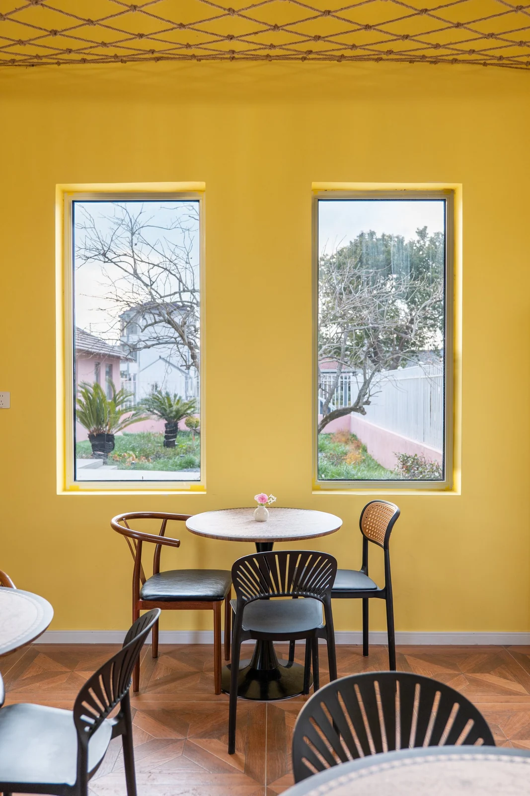
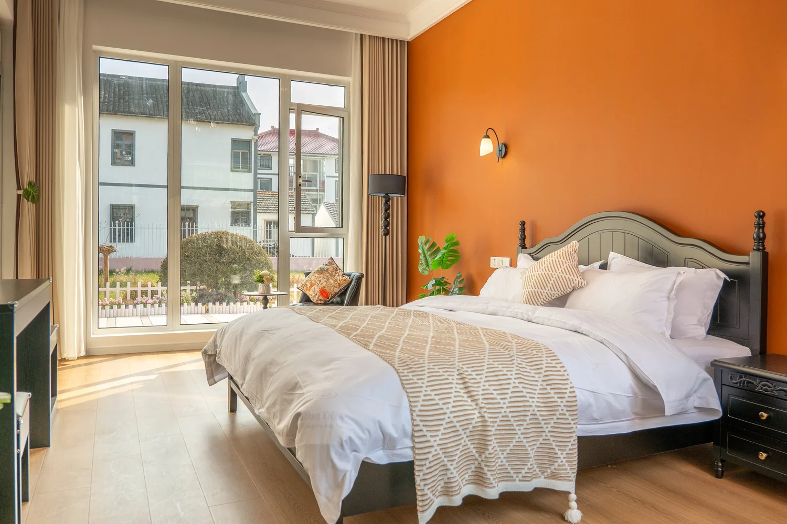

VANTAGE Production / RFG Studio
书院民宿
通过自然光、色彩与空间关系，呈现民宿客房、软装细节、休憩区域及建筑外观。

现场背景
这组照片从建筑外观延伸到客房、软装和休憩区域。自然光和材质在各个空间中形成呼应，让分散的画面读起来像一次完整的到访。
拍摄与编排
外观照交代建筑与环境，室内全景让人看清布局，细节照留给软装与材质。发布时可以按到访顺序组织，也可以把辨识度高的空间独立做成预约页主图。


摄影 · RFG Studio